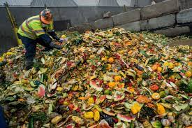

Foodwaste is when food is not consumed by humans and thrown away or recycled. Foodwaste contributes 6%-8% of global wamring which is a pretty large impact. In just the US the production of lost food waste prodcues the same as 32.6 million cars worth of greenhouse gas emissions.

Foodwaste is an issue because when we waste food we also are wasting the energy and water it takes for the food to grow, harvest, and transport. If food goes to landfills and rots it produces methane which is a greenhouse gas even more toxic than carbon dioxide.